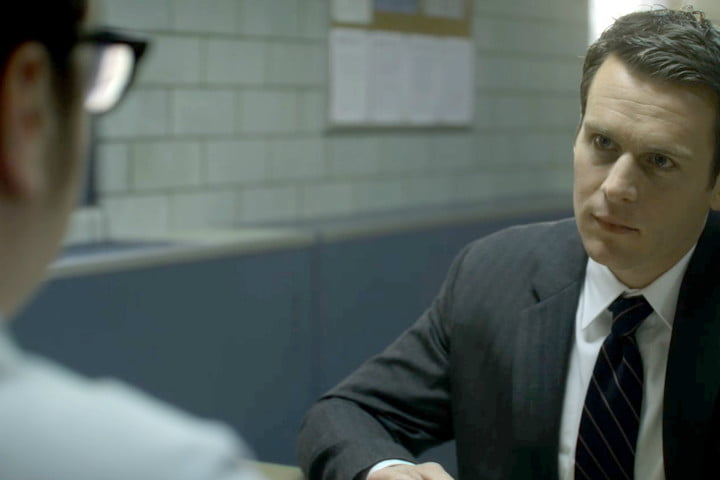
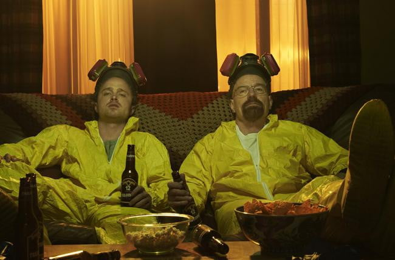
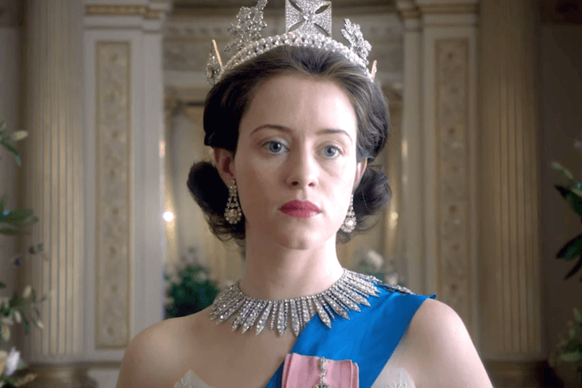
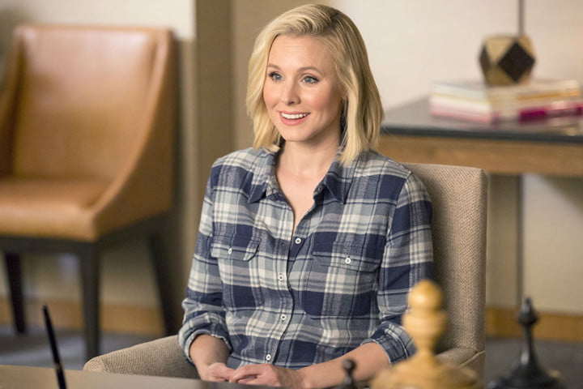

In 1977, cultural earthquakes have toppled faith in the American ideal, and the agents of the FBI face an unfamiliar kind of criminal: The serial killer, whose crimes have no basis in reason as far as the agency can see. Agent Holden Ford (Jonathan Groff) believes that, with enough research, the FBI can make sense of the seemingly senseless violence. Together with Behavioral Science Unit agent Bill Tench (Holt McCallany), Ford travels the country, interviewing imprisoned serial killers to understand what drives them, but gazing into the abyss starts to gnaw at the agents. From director David Fincher, Mindhunter is a sleek, eerie production, with a focus on the nature of criminal psychology, rather than grotesque violence.

Walter White (Bryan Cranston) is a high-school chemistry teacher diagnosed with late-stage lung cancer. To secure his family’s finances before he dies, White uses his chemistry background to cook and deal premium blue meth. His partner is former student and burnout named Jesse Pinkman (Aaron Paul). Breaking Bad is teeming with moral consequences and family issues, and fittingly, it’s as addicting as the crystal meth White produces in his beat-up van in the desert.

Britain’s current and longest-reigning monarch is also one of its most unassuming. Elizabeth II ascended to the throne in the aftermath of World War II, at a time when the monarchy had ceded much of its power to Parliament and the Prime Minister. Despite a lack of governmental power, the Queen remains one of the most important heads of state in the world, and civic duties abound. Netflix’s The Crown traces Elizabeth’s (Claire Foy) life from her marriage to Prince Philip (Matt Smith) in 1947 to the present day, digging into the web of agendas and alliances the Queen must navigate. Heavy on political intrigue, The Crown is sure to satisfy viewers who appreciate Machiavellian television, as well as those who love the decor of series like Downton Abbey. However, the show also has a deeply intimate side, in that it examines Elizabeth’s personal relationships and the toll exacted by her duties as Queen.

Bureaucratic mix-ups can be a nightmare — just ask anyone who has needed to apply for a passport — but on occasion, they can work out in your favor. Eleanor Shellstrop (Kristen Bell) finds herself on the good side of a paperwork snafu when, after dying, she ends up in the Good Place, a serene afterlife neighborhood built by a cosmic architect named Michael (Ted Danson). In reality, Eleanor was an abrasive person who only looked out for herself. Now, in order to avoid being discovered and sent to the Bad Place, she must learn how to behave like a nice person. The Good Place is an upbeat comedy whose unique setting and surprising plot set it a notch above most sitcoms.

The opening sequence of Stranger Things lays out the series’ sci-fi aspirations clearly: A scientist flees down an empty hallway, pursued by some unseen force that eventually nabs him as he waits for elevator doors to close; it then cuts to a group of kids playing D&D in a suburban basement. From Alien to E.T. in a matter of seconds. The show is a stew made of various influences from the ‘80s. A mysterious creature and a secret government agency, a group of kids having adventures around their rural town, teens experimenting with sex, drugs, and peer pressure.
The opening sequence of Stranger Things lays out the series’ sci-fi aspirations clearly: A scientist flees down an empty hallway, pursued by some unseen force that eventually nabs him as he waits for elevator doors to close; it then cuts to a group of kids playing D&D in a suburban basement. From Alien to E.T. in a matter of seconds. The show is a stew made of various influences from the ‘80s. A mysterious creature and a secret government agency, a group of kids having adventures around their rural town, teens experimenting with sex, drugs, and peer pressure.